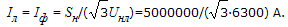

Упражнение 10.1
|
Трёхфазный синхронный генератор, обмотки статора которого соединены звездой, имеет следующие паспортные данные: номинальная мощность Sн = 5 МВ·А; линейное напряжение Uлн = 6,3 кВ; коэффициент мощности cosφ = 0,8; сопротивление фазной обмотки R = 0,04 Ом.
Найти КПД генератора, работающего в номинальном режиме, если потери в стали DРст = 15 кВт; механические и добавочные потери DРмех = DРд = 0,5%Рн, где Рн – номинальная активная мощность генератора. Напряжение возбудителя Uв = 113 В, ток возбуждения в номинальном режиме Iв = 274 А, КПД возбудителя ηв = 0,95. Решение. 1. При соединении обмоток статора звездой линейный ток равен фазному и может быть найден из формулы мощности для симметричной трёхфазной системы:  2. Потери мощности в меди обмотки статора (якоря) DPm = 3RIm2 = 3·0,04·4582 = 25,2 кВт. 3. Номинальная активная мощность генератора Pн = Sнcosφ = 5·0,8 = 4 кВт. 4. Механические и добавочные потери DPмех = DPн = 0,005Pн = 0,005·4000 = 20 кВт. 5. Мощность, расходуемая на возбуждение генератора Pв = (UвIв)/hв = (113·274)/0,95 = 32,6 кВт. Далее |